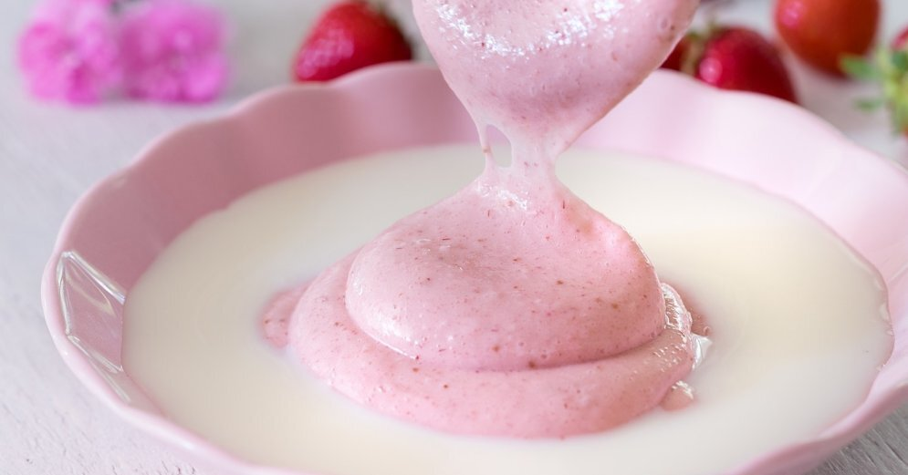

Debesmanna

Description
Debesmanna is a sweet dish made from whipped sugar and fruit or berry
pulp. Manna mousse is also called skymanna and includes whipped egg
white, whipped cream, semolina or flour. The egg whites are used to make the mousse firm and chunky. Gelatine may also be added to make it more stable.
Debesmanna is full of every Latvian’s childhood memories. It is, and
always has been, the most popular dessert in Latvian cuisine. Every
tourist should try it because it is truly the national dessert of the
country.
Ingredients
- 3 cups unsweetened cranberry juice
- ½ cup sugar
- ½ cup cream of wheat
- Milk, for serving
Steps
-
In a medium saucepan set over medium-high heat, stir together juice
and sugar, and bring to a boil.
-
Gradually sprinkle in the cream of wheat, whisking briskly to make
sure the mixture doesn't get lumpy. Reduce heat to medium-low and cook,
whisking constantly, until thickened, about 5 minutes.
-
Scrape the mixture into the bowl of a stand mixer fitted with a whisk,
and beat on medium-high speed until the pudding is thick and doubled
in volume, about 12 minutes.
-
Immediately spoon into serving bowls. Before serving, top each bowl
off with a splash of milk, if desired, or simply serve plain.